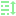

04 · Conceito
NODE GUARDA COMPORTAMENTO. RESOURCE GUARDA DADO.
Node
Existe dentro da cena. Ocupa lugar na árvore, roda _process, aparece na tela. É um ator do jogo.
Resource
Existe como arquivo. Não tem posição, não roda a cada quadro, não aparece sozinho. É uma ficha de dados que qualquer Node pode carregar.
Você já usou Resources sem perceber A
Texture2D que você arrastou para o Sprite2D é um Resource. O RectangleShape2D do CollisionShape2D também. A animação que você gravou no AnimationPlayer também.Por que isso importa hoje Uma fala é dado puro: um texto, uma imagem, um tempo. Nada nela precisa rodar. É exatamente a descrição de um Resource.
06 · Prática
CADA FALA VIRA UM ARQUIVO
- No painel FileSystem, botão direito numa pasta → New Resource…
- Na busca, digite
DialogueData— ele aparece porque demos umclass_name. - Salve como
ferreiro_01.tres, numa pastadialogues/. - Clique no arquivo: o Inspector mostra os três campos. Preencha.
- Repita para cada fala. Uma fala, um arquivo.
O que é um
.tres? É o arquivo de Resource do Godot em formato de texto. Dá para abrir num editor de texto e ler — e, porque é texto, funciona bem quando várias pessoas mexem no mesmo projeto.DialogueData não aparece em New Resource? O class_name só é registrado depois que o script é salvo. Salve o arquivo e tente de novo.FileSystem
Inspector — ferreiro_01.tres
DialogueData
Text
Bem-vindo, viajante.
Duration
1.2
Portrait
ferreiro.png
Numere os arquivos
ferreiro_01, ferreiro_02… A ordem da conversa você monta daqui a pouco, mas o nome já ajuda a não se perder.09 · Prática
A CENA DA CAIXA DE DIÁLOGO
Scene — dialogue_ui
ColorRect

RichTextLabelPortrait
O caminho tem que bater O
RichTextLabel é filho do ColorRect, e o Portrait é irmão dele. É por isso que o código escreve $ColorRect/RichTextLabel e $Portrait. Mudou a árvore, mude o caminho.
ColorRect
O retângulo de fundo, para o texto não ficar solto na tela.
RichTextLabel
O texto. Escolhido por causa de uma propriedade só, no próximo slide.
TextureRect
O retrato. Mostra uma imagem e some quando a fala não tem rosto.
Interface é o Módulo 7 Ancoragem, tamanho e posição desses Nodes são assunto de lá. Aqui a preocupação é o comportamento.
17 · Prática
MONTANDO O NPC
Scene — npc
Duas peças, dois trabalhos A do Módulo 5 percebe que o jogador chegou e apertou o botão. A de hoje sabe o que dizer. Nenhuma das duas precisa entender a outra.
A ligação No componente de interação, escolha como função de destino o
start() do DialogueComponent. É exatamente o "chame a função da sua escolha" que o Giovane montou no Módulo 5.Um NPC novo, zero linhas Duplique a cena, troque o sprite e troque os
.tres do Inspector. Nenhum script é aberto — que era o objetivo desde o primeiro slide.Crie a ação no Input Map Project Settings ▸ Input Map, ação
advance_dialogue. Como no Módulo 3-4, o nome descreve o que faz, não a tecla — assim você troca a tecla depois sem tocar em código.